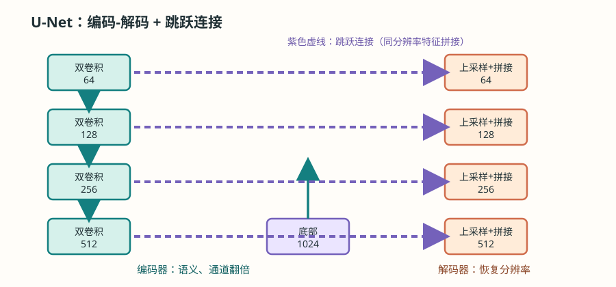
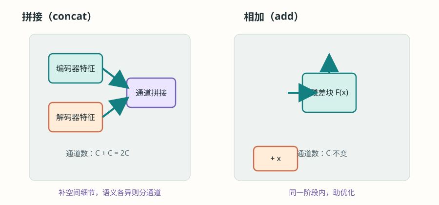
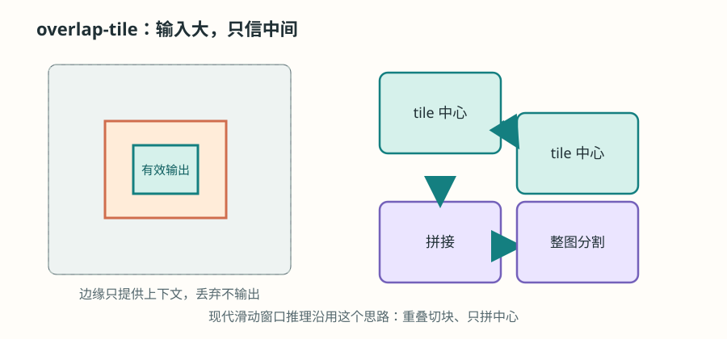

CHAPTER 20 · U-NET
U-Net：用跳跃连接把细节还给解码器
U-Net 用一个对称的编码-解码网络加跨层拼接，让解码器同时拿到深层的语义与浅层的高分辨率细节。它在医学分割的小样本设定上特别有效，并提出 overlap-tile、弹性形变增强与边界加权损失。
为什么小标注数据需要特殊架构
U-Net（Ronneberger、Fischer、Brox，MICCAI 2015）诞生于两个具体的约束。第一，像素级医学标注稀缺：一张 CT 切片的逐像素标注需要专业医生完成，成本极高，可用样本往往只有几十到几百张。第二，分割要求高空间精度：脉瘤边界差几个像素就可能影响判断，而纯编码（不断下采样）的 FCN 在上采样时容易丢失精细边缘。
U-Net 的答案是：用一个对称的编码-解码网络逐级恢复分辨率，并用跨层拼接把编码阶段的高分辨率特征直接补给解码阶段；同时用强数据增强与加权损失让小数据集也能训稳。它并未发明卷积、池化或上采样，而是把这些已有部件组合成恰好匹配医学分割的架构。它被广泛引用（具体引用数随时间变化，本页不固化数字）。
对称的编码-解码结构
U-Net 形如其名：左侧编码（下采样）路径、右侧解码（上采样）路径、中间由跨层拼接连接，整体呈“U”形。编码器每层是两次 3×3 卷积（每次后接 ReLU）加一次 2×2 最大池化；每次下采样后通道翻倍。解码器每层先做一次上采样把尺寸加倍、通道减半，与编码器对应层拼接后再做两次 3×3 卷积。“U”的底部是编码与解码的桥梁，通道数最高。

| 阶段 | 操作 | 空间尺寸 | 通道数（原论文） |
|---|---|---|---|
| 编码第 1 层 | 2×3×3 卷积 + ReLU，2×2 最大池化 | 逐级减半 | 64 |
| 编码第 2 层 | 同上 | 逐级减半 | 128 |
| 编码第 3 层 | 同上 | 逐级减半 | 256 |
| 编码第 4 层 | 同上 | 逐级减半 | 512 |
| 底部（桥梁） | 2×3×3 卷积 + ReLU，含 dropout | 最小 | 1024 |
原论文的一个关键细节：U-Net 用的是无填充（valid）卷积，每次 3×3 卷积都会让特征图缩小 2 像素，因此输入 572×572 时输出变成更小的 388×388，拼接时还需要对编码器特征做裁剪（crop）以对齐尺寸。后来的实现多数改用同尺寸卷积并显存友好的拼接，使输入输出分辨率一致——这是教学简化，不是原论文做法，两者在边界像素的可用信息上不同。
跳跃连接：拼接而不是相加
“跳跃连接”这个名字容易与 ResNet 的残差连接混淆，但二者功能不同。ResNet 的残差是同一阶段内的恒等映射相加，为的是缓解深层网络的优化退化；U-Net 的跳跃连接是编码器与解码器对应层之间的跨层通路，为的是把下采样丢掉的空间细节送回解码器。

为什么是拼接（concat）而不是相加（add）？编码器送来的是低层的边缘、纹理细节，解码器已有的是高层语义，二者语义层次不同。逐元素相加会让他们在同一个通道里相加、相互干扰；拼接则把它们放在不同的通道，交给后续卷积自行分配权重。在分割任务中，这一区别通常带来更精细的边界。这是原论文的设计选择，不是唯一做法——后来也有用相加的轻量变体，但拼接是 U-Net 的默认形式。
overlap-tile、弹性形变与边界加权损失
U-Net 能在小数据集上训好，离不开三个训练相关的设计：
其一，overlap-tile 策略。由于无填充卷积会让输出比输入小，U-Net 不能直接对整张大图前向。做法是用带重叠的 tiles 拼接推理：每次预测一个 tile 的中心区域，边缘区域只做上下文（输出被舍弃），再把各 tile 的中心拼接起来，从而无缝地分割任意大的图像。这个“输入大、只信中间”的思路是现代滑动窗口推理与超大图像分割的早期范例。
其二，弹性形变数据增强。对图像施加随机的平滑非线性扭曲来造样本。生物组织的形变本身就是非刚性的，因此弹性形变相当于对真实变化建模，在样本很少时特别有效。

其三，带边界权重的交叉熵。对相邻细胞之间的窄边界赋予更高权重，迫使模型不把相邻物体粘在一起。权重图由类别频率与到最近边界的距离共同决定：
d1、d2 是像素到最近与第二近的细胞边界的距离；靠近边界处指数项接近 1，从而放大该像素的损失权重。
def unet_valid_output_size(size=572, levels=4, k=3):
# 模拟原 U-Net：每层两次 3×3 有效（无填充）卷积 + 一次 2×2 最大池化
s = size
enc = []
for _ in range(levels):
s -= 2 * (k - 1) # 两次 3×3 卷积各缩小 k-1
enc.append(s)
s //= 2 # 最大池化
s -= 2 * (k - 1) # 底部双卷积
for _ in range(levels):
s *= 2 # 转置卷积上采样
s -= 2 * (k - 1) # 拼接后的两次 3×3 有效卷积
return s, enc
out, enc = unet_valid_output_size()
assert out == 388, out
assert enc == [568, 280, 136, 64], enc
print("572x572 →", out, "encoder sizes:", enc)上面是可运行的形状模拟（无第三方依赖）：输入 572×572 时输出 388×388，与 U-Net 原论文一致。它只验证拓扑与尺寸，并不等于完整模型。
从 3D U-Net 到 nnU-Net
U-Net 的简洁架构催生了大量变体，可以分为两类：改结构的，与改训练/配置的。
| 变体 | 改动 | 典型场景 |
|---|---|---|
| 3D U-Net（2016） | 把 2D 卷积/池化/上采样换成 3D | CT/MRI 体数据分割 |
| Attention U-Net（2018） | 在跳跃连接上加注意力门控，抑制无关区域 | 多器官分割 |
| ResUNet | 用残差块替换普通卷积块 | 需要更深语义的分割 |
| U-Net++（2018） | 多级嵌套跳跃连接，缩小语义鸿沟 | 细胞核、细粒度目标 |
| nnU-Net（2020） | 不是新架构，而是自动化配置框架（自动选 2D/3D、重采样、patch 大小、损失） | “开箱即用”的医学分割基准 |
其中 nnU-Net 最有启发性：它不发明新模块，而是把“如何根据数据集自动配置一个 U-Net”做成系统。这从一个侧面说明，U-Net 作为基础框架的泛化能力有多强——很多时候瓶颈在配置而不在架构。
跨领域的泛化
U-Net 的“编码器提语义 + 解码器恢复细节 + 跳跃连接保留空间信息”已成为通用分割范式，远远超出医学图像：
- 医学：细胞分割（最初的动机）、器官分割（3D U-Net 处理体数据）、病灶分割（视网膜 OCT、脑 MRI 胶质瘤）。
- 遥感：建筑物提取、道路分割、农田地块识别——高分辨率图像的边界精细度正好是跳跃连接的长处。
- 工业质检：分割表面划痕、凹坑、裂纹；缺陷尺寸小、对比度低，依赖多尺度特征融合。
- 自动驾驶：轻量变体用于可行驶区域与车道线分割，在算力受限平台上其简单结构反而是优势。
需要提醒的是，这些领域通常会对 U-Net 做针对性改造（换个主干、加多尺度模块、换成 3D），因此“用了 U-Net”不等于“用了原论文那一套”。
U-Net 的适用边界
U-Net 并非万能。它最适合输入输出空间分辨率基本一致、物体尺度范围不太极端的任务，医学图像通常满足这一点。在下面两类场景，单纯的编码-解码结构可能不够：
- 极大多尺度共存的自然图像：需要更强的多尺度上下文聚合（如 ASPP、金字塔池化或特征金字塔）。
- 类别数很多、语义很细：需要更深的语义表征与更大的感受野。
一个实用的判断方法：先看你的任务是否“小而精、分辨率一致”——如果是，U-Net 通常是第一个值得试的基线；如果需要极大多尺度或实例级区分，再考虑带上下文模块的变体或实例分割框架。
检查理解：U-Net 的跳跃连接与 ResNet 的残差连接有什么本质不同？
U-Net 的跳跃连接横跨编码器与解码器，用拼接把高分辨率细节送回解码器，解决的是“下采样丢细节”；ResNet 的残差在同一阶段内做恒等映射相加，解决的是“深层网络优化退化”。前者补空间信息且改变通道数，后者助优化且保持通道数。
原始资料与口径
本页的架构、通道数、overlap-tile、弹性形变与边界加权损失依据 U-Net 原论文；可运行片段用同尺寸卷积做形状模拟，已在正文注明为教学简化。变体信息依据各自论文。